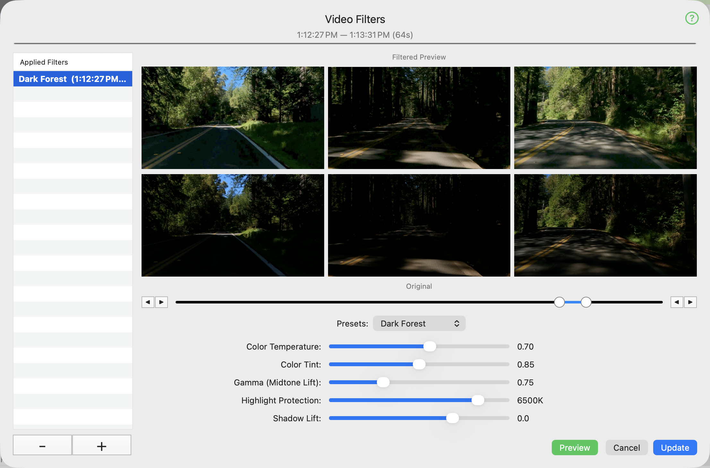

This editor manages the application of video filters to selected video time segments.
Use the controls to set the precise time interval, and the sliders to set the effect you wish to apply.
The Preview button shows you the filter in action, before you apply or update it.
